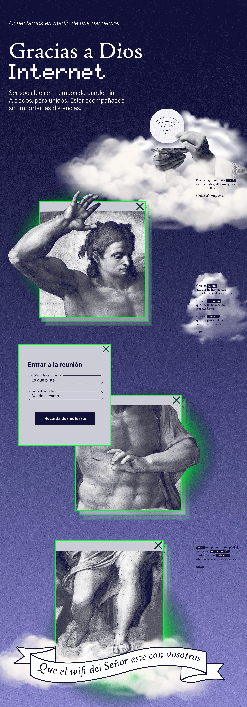

Gracias a Dios, Internet
Una exploración satírica sobre la sacralización de la tecnología durante el aislamiento. Mediante un relato gráfico que hibrida el arte clásico con la interfaz digital, este proyecto realizado para la Cátedra Salomone de la FADU indaga en cómo Internet se convirtió en nuestra nueva fe, transformando las plataformas de videollamada en los nuevos espacios de congregación espiritual.

El Desafío
En el marco de la cursada virtual de la materia Diseño Gráfico 3, Cátedra Salomone, el desafío fue representar la corporalidad mediada por pantallas. Decidí abordar el sentimiento de encierro desde una perspectiva irónica: la dependencia absoluta hacia la red. El reto fue construir un relato que funcionara tanto en lo analógico como en lo digital, utilizando el cuerpo como eje de las tensiones entre lo humano y lo virtual.
La Solución
Propuse un paralelismo retórico entre el catolicismo y la conectividad. A través de un collage digital que fragmenta el cuerpo clásico en ventanas de sistema, reinterpretciones de oraciones y conceptos religiosos (como el 'pan de cada día' o la 'omnipresencia') aplicándolos a herramientas como LinkedIn, Instagram y Zoom. La pieza culmina en un GIF animado que refuerza la idea de una liturgia digital eterna.
"Que el wifi del Señor esté con vosotros": cuando la conexión se vuelve nuestra forma de salvación.


